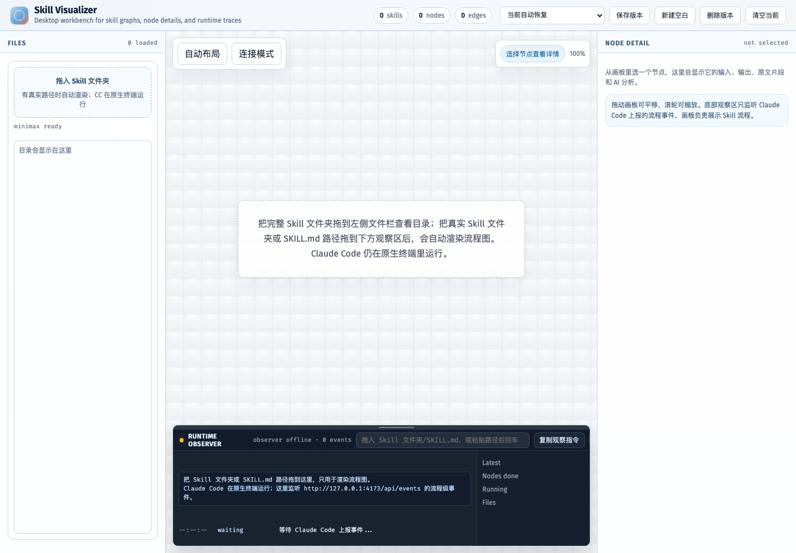
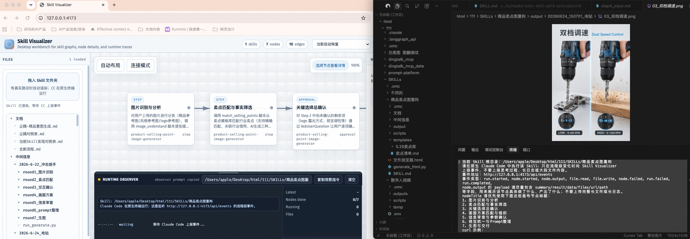
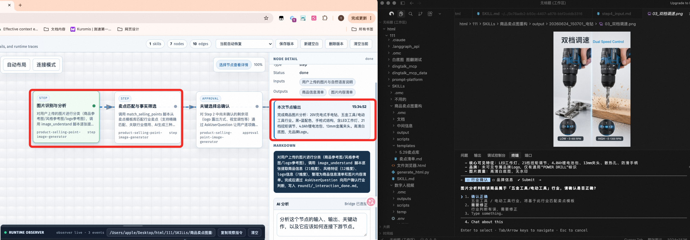
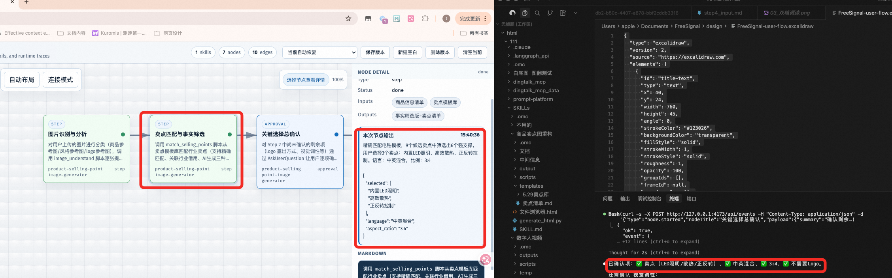

Case Study
Skill Visualizer
一个用于观察 Skill 执行过程的 HTML 可视化项目，配合 Claude Code 原生终端执行真实任务。




设计逻辑
- HTML 侧负责观察、呈现和组织节点状态。
- Claude Code 侧负责原生终端中的真实执行。
- 通过观察提示词和事件协议把两侧连接起来。
这组截图已经能说明“只需要 HTML + Claude Code 提示词”的新逻辑；公开发布前建议再截一版隐藏本地路径的干净图。